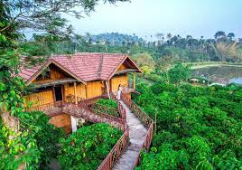
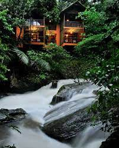
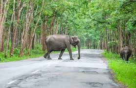
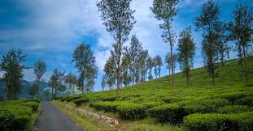
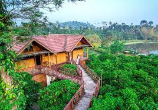
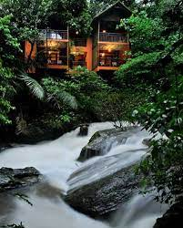
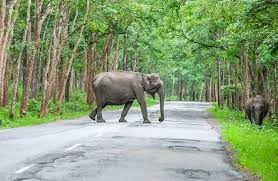
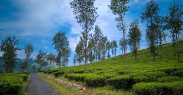
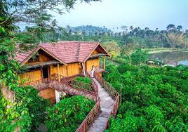
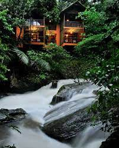
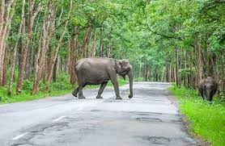
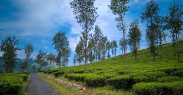
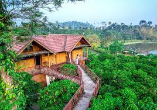
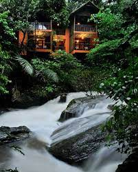
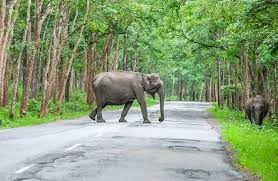
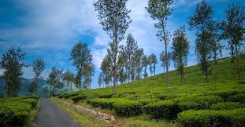
Wayanad is a stunning hill district located in the northern part of Kerala, known for its lush green landscapes, serene waterfalls, and rich biodiversity.
Wayanad's culture is influenced by its tribal communities. The region celebrates traditional festivals and has a unique tribal dance form known as "Thirayattam."
Wayanad is known for its traditional art forms, including "Thirayattam" and "Vadakkan Pattu." These art forms are an integral part of the cultural heritage of the region.
Wayanad is renowned for its spices, coffee, and tea plantations. The district is famous for its high-quality spices like pepper, cardamom, and cloves, along with aromatic coffee and tea.